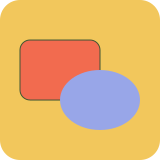
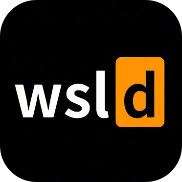

WEB · SVGAlbedo
浏览器里的 SVG 工作台。
画图形、改路径、排图层，再把干净的结果导出成 SVG。单文件，离线可用。
XYZWPS / TOOLS
网页里的，桌面上的。自己写，自己用——没有账号，没有信息流，打开就能用。
先放这些，后面还会有新的。

WEB · SVG浏览器里的 SVG 工作台。
画图形、改路径、排图层，再把干净的结果导出成 SVG。单文件，离线可用。

WINDOWS · WSL给 WSL 容器一个窗口。
容器、镜像、日志和 wslc run 都收进一个窗口，不用再记一串参数。
下一个项目还在做。